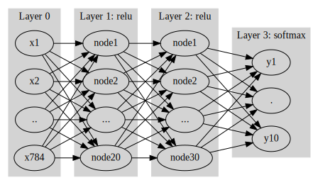
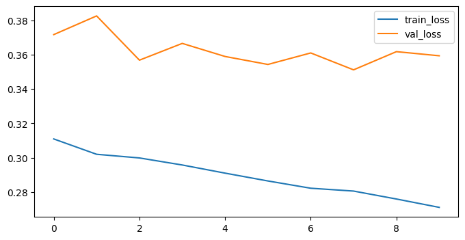
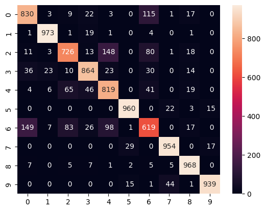

1. DNN
Fashion_mnist 자료를 불러온 뒤 아래의 네트워크를 이용하여 적합하라.
1 평가지표로 accuracy를 이용할 것
2 epoch는 10으로 설정할 것
3 optimizer는 adam을 이용할 것
데이터 로드
Downloading data from https://storage.googleapis.com/tensorflow/tf-keras-datasets/train-labels-idx1-ubyte.gz
29515/29515 [==============================] - 0s 0us/step
Downloading data from https://storage.googleapis.com/tensorflow/tf-keras-datasets/train-images-idx3-ubyte.gz
26421880/26421880 [==============================] - 0s 0us/step
Downloading data from https://storage.googleapis.com/tensorflow/tf-keras-datasets/t10k-labels-idx1-ubyte.gz
5148/5148 [==============================] - 0s 0us/step
Downloading data from https://storage.googleapis.com/tensorflow/tf-keras-datasets/t10k-images-idx3-ubyte.gz
4422102/4422102 [==============================] - 0s 0us/step데이터 전처리
- MinMax scaler 금지 \(\to\) 태블러 데이터에 최적화되어있기 때문
- 전처리 규칙은 train set을 따라야한다!
모델 설계
import graphviz
def gv(s): return graphviz.Source('digraph G{ rankdir="LR"'+ s + ';}')
#collapse
gv('''
splines=line
subgraph cluster_1{
style=filled;
color=lightgrey;
"x1"
"x2"
".."
"x784"
label = "Layer 0"
}
subgraph cluster_2{
style=filled;
color=lightgrey;
"x1" -> "node1"
"x2" -> "node1"
".." -> "node1"
"x784" -> "node1"
"x1" -> "node2"
"x2" -> "node2"
".." -> "node2"
"x784" -> "node2"
"x1" -> "..."
"x2" -> "..."
".." -> "..."
"x784" -> "..."
"x1" -> "node20"
"x2" -> "node20"
".." -> "node20"
"x784" -> "node20"
label = "Layer 1: relu"
}
subgraph cluster_3{
style=filled;
color=lightgrey;
"node1" -> "node1 "
"node2" -> "node1 "
"..." -> "node1 "
"node20" -> "node1 "
"node1" -> "node2 "
"node2" -> "node2 "
"..." -> "node2 "
"node20" -> "node2 "
"node1" -> "... "
"node2" -> "... "
"..." -> "... "
"node20" -> "... "
"node1" -> "node30 "
"node2" -> "node30 "
"..." -> "node30 "
"node20" -> "node30 "
label = "Layer 2: relu"
}
subgraph cluster_4{
style=filled;
color=lightgrey;
"node1 " -> "y10"
"node2 " -> "y10"
"... " -> "y10"
"node30 " -> "y10"
"node1 " -> "y1"
"node2 " -> "y1"
"... " -> "y1"
"node30 " -> "y1"
"node1 " -> "."
"node2 " -> "."
"... " -> "."
"node30 " -> "."
label = "Layer 3: softmax"
}
''')
모델 학습
history = model.fit(train_x, y_train, epochs = 10, validation_split = 0.2,
callbacks = [es, mc]).historyEpoch 1/10
1485/1500 [============================>.] - ETA: 0s - loss: 0.3112 - acc: 0.8847
Epoch 1: val_loss did not improve from 0.35468
1500/1500 [==============================] - 6s 4ms/step - loss: 0.3110 - acc: 0.8849 - val_loss: 0.3716 - val_acc: 0.8689
Epoch 2/10
1489/1500 [============================>.] - ETA: 0s - loss: 0.3018 - acc: 0.8887
Epoch 2: val_loss did not improve from 0.35468
1500/1500 [==============================] - 5s 3ms/step - loss: 0.3020 - acc: 0.8888 - val_loss: 0.3825 - val_acc: 0.8664
Epoch 3/10
1483/1500 [============================>.] - ETA: 0s - loss: 0.2999 - acc: 0.8894
Epoch 3: val_loss did not improve from 0.35468
1500/1500 [==============================] - 5s 3ms/step - loss: 0.2999 - acc: 0.8895 - val_loss: 0.3568 - val_acc: 0.8772
Epoch 4/10
1499/1500 [============================>.] - ETA: 0s - loss: 0.2959 - acc: 0.8922
Epoch 4: val_loss did not improve from 0.35468
1500/1500 [==============================] - 5s 4ms/step - loss: 0.2958 - acc: 0.8923 - val_loss: 0.3665 - val_acc: 0.8738
Epoch 5/10
1490/1500 [============================>.] - ETA: 0s - loss: 0.2912 - acc: 0.8904
Epoch 5: val_loss did not improve from 0.35468
1500/1500 [==============================] - 5s 4ms/step - loss: 0.2911 - acc: 0.8905 - val_loss: 0.3589 - val_acc: 0.8723
Epoch 6/10
1499/1500 [============================>.] - ETA: 0s - loss: 0.2865 - acc: 0.8951
Epoch 6: val_loss improved from 0.35468 to 0.35428, saving model to mnist_dnn.ckpt
1500/1500 [==============================] - 8s 5ms/step - loss: 0.2865 - acc: 0.8951 - val_loss: 0.3543 - val_acc: 0.8740
Epoch 7/10
1498/1500 [============================>.] - ETA: 0s - loss: 0.2824 - acc: 0.8946
Epoch 7: val_loss did not improve from 0.35428
1500/1500 [==============================] - 5s 3ms/step - loss: 0.2823 - acc: 0.8946 - val_loss: 0.3610 - val_acc: 0.8751
Epoch 8/10
1482/1500 [============================>.] - ETA: 0s - loss: 0.2809 - acc: 0.8966
Epoch 8: val_loss improved from 0.35428 to 0.35115, saving model to mnist_dnn.ckpt
1500/1500 [==============================] - 6s 4ms/step - loss: 0.2807 - acc: 0.8966 - val_loss: 0.3511 - val_acc: 0.8751
Epoch 9/10
1485/1500 [============================>.] - ETA: 0s - loss: 0.2759 - acc: 0.8977
Epoch 9: val_loss did not improve from 0.35115
1500/1500 [==============================] - 5s 3ms/step - loss: 0.2760 - acc: 0.8977 - val_loss: 0.3617 - val_acc: 0.8750
Epoch 10/10
1495/1500 [============================>.] - ETA: 0s - loss: 0.2708 - acc: 0.9002
Epoch 10: val_loss did not improve from 0.35115
1500/1500 [==============================] - 5s 3ms/step - loss: 0.2712 - acc: 0.9001 - val_loss: 0.3593 - val_acc: 0.8748(2) 적합된 네트워크를 이용하여 test data의 accuracy를 구하라
(3) 과적합인지 확인
1 train_loss, val_loss 확인
import matplotlib.pyplot as plt
plt.figure(figsize = (8,4))
plt.plot(history["loss"], label = "train_loss")
plt.plot(history["val_loss"], label = "val_loss")
plt.legend()
plt.show()
2 실젝값, 예측값 비교
from sklearn.metrics import *
import seaborn as sns
sns.heatmap(confusion_matrix(y_test, result1),
annot = True, fmt = "3d")
print(classification_report(y_test, result1))
plt.show() precision recall f1-score support
0 0.80 0.83 0.81 1000
1 0.96 0.97 0.97 1000
2 0.81 0.73 0.76 1000
3 0.87 0.86 0.87 1000
4 0.75 0.82 0.78 1000
5 0.95 0.96 0.96 1000
6 0.69 0.62 0.65 1000
7 0.93 0.95 0.94 1000
8 0.91 0.97 0.94 1000
9 0.97 0.94 0.95 1000
accuracy 0.87 10000
macro avg 0.86 0.87 0.86 10000
weighted avg 0.86 0.87 0.86 10000

2. CNN

fashion_mnist 자료를 불러온 뒤 위와 같은 네트워크를 적합하라.
데이터 로드 및 전처리
모델 설계 1
이때 n1=6, n2=16, n3=120 으로 설정한다, 드랍아웃비율은 20%로 설정한다.
model = Sequential()
model.add(Conv2D(filters = 6, kernel_size = (5 ,5), input_shape = (28, 28, 1), padding = "valid")) ## 패딩은 "valid"가 기본값
model.add(MaxPool2D(pool_size = (2,2), padding = "valid")) ## 패딩과 pool_size는 입력한 값이 디폴트임
model.add(Conv2D(16, (5, 5)))
model.add(MaxPool2D())
model.add(Flatten())
model.add(Dense(120, activation = "relu"))
model.add(Dropout(0.2))
model.add(Dense(10, activation = "softmax"))
model.compile(optimizer = Adam(0.001), loss = "sparse_categorical_crossentropy", metrics = ["acc"])Model: "sequential_9"
_________________________________________________________________
Layer (type) Output Shape Param #
=================================================================
conv2d_8 (Conv2D) (None, 24, 24, 6) 156
max_pooling2d_7 (MaxPoolin (None, 12, 12, 6) 0
g2D)
conv2d_9 (Conv2D) (None, 8, 8, 16) 2416
max_pooling2d_8 (MaxPoolin (None, 4, 4, 16) 0
g2D)
flatten_6 (Flatten) (None, 256) 0
dense_15 (Dense) (None, 120) 30840
dropout_3 (Dropout) (None, 120) 0
dense_16 (Dense) (None, 10) 1210
=================================================================
Total params: 34622 (135.24 KB)
Trainable params: 34622 (135.24 KB)
Non-trainable params: 0 (0.00 Byte)
_________________________________________________________________모델 설계 2
n1=(6,64,128), n2=(16,256)에 대하여 test set의 loss가 최소화되는 조합을 찾아라.
- epoc = 3, validation = 0.2로 설정
n1 = [6, 64, 128]
n2 = [16, 256]
for i in n1 :
for j in n2 :
model = Sequential()
model.add(Conv2D(filters = i, kernel_size = (5 ,5), input_shape = (28, 28, 1), padding = "valid")) ## 패딩은 "valid"가 기본값
model.add(MaxPool2D(pool_size = (2,2), padding = "valid")) ## 패딩과 pool_size는 입력한 값이 디폴트임
model.add(Conv2D(j, (5, 5)))
model.add(MaxPool2D())
model.add(Flatten())
model.add(Dense(120, activation = "relu"))
model.add(Dropout(0.2))
model.add(Dense(10, activation = "softmax"))
model.compile(optimizer = Adam(0.001), loss = "sparse_categorical_crossentropy", metrics = ["acc"])
model.fit(train_x, y_train, validation_split = 0.2, epochs = 3, verbose = 0)
result = model.evaluate(test_x, y_test)
print(f"n1 : {i}, n2 : {j} -> loss : {result[0]}, acc : {result[1]}")313/313 [==============================] - 1s 2ms/step - loss: 0.3501 - acc: 0.8754
n1 : 6, n2 : 16 -> loss : 0.3500571548938751, acc : 0.8754000067710876
313/313 [==============================] - 1s 2ms/step - loss: 0.3233 - acc: 0.8802
n1 : 6, n2 : 256 -> loss : 0.32328951358795166, acc : 0.8802000284194946
313/313 [==============================] - 1s 3ms/step - loss: 0.3424 - acc: 0.8788
n1 : 64, n2 : 16 -> loss : 0.34240153431892395, acc : 0.8787999749183655
313/313 [==============================] - 1s 3ms/step - loss: 0.3065 - acc: 0.8891
n1 : 64, n2 : 256 -> loss : 0.30652520060539246, acc : 0.8891000151634216
313/313 [==============================] - 1s 3ms/step - loss: 0.3387 - acc: 0.8804
n1 : 128, n2 : 16 -> loss : 0.3387366831302643, acc : 0.8804000020027161
313/313 [==============================] - 1s 4ms/step - loss: 0.3110 - acc: 0.8912
n1 : 128, n2 : 256 -> loss : 0.31100359559059143, acc : 0.8912000060081482- 64, 256 일 때 test_loss가 가장 작음
3. CIFAR10
- 데이터를 로드 후 모델을 자유롭게 설계해서 testset의 정확도를 70%이상 확보
데이터 로드 및 전처리
((50000, 32, 32, 3), (50000, 1), (10000, 32, 32, 3), (10000, 1))모델 설계
model = Sequential()
model.add(Conv2D(32, (3,3), input_shape = (32,32, 3)))
model.add(Conv2D(32, (3,3)))
model.add(BatchNormalization())
model.add(MaxPool2D((2, 2), strides = (2,2)))
model.add(Dropout(0.25))
model.add(Conv2D(64, (3,3)))
model.add(Conv2D(64, (3, 3)))
model.add(MaxPool2D((2, 2), strides = (2,2)))
model.add(BatchNormalization())
model.add(Dropout(0.25))
model.add(Flatten())
model.add(Dense(1024, activation = "relu"))
model.add(BatchNormalization())
model.add(Dropout(0.2))
model.add(Dense(10, activation = "softmax"))
model.compile(optimizer = Adam(0.001), loss = "sparse_categorical_crossentropy", metrics = ["acc"])Epoch 1/30
1243/1250 [============================>.] - ETA: 0s - loss: 1.6670 - acc: 0.4495
Epoch 1: val_loss improved from inf to 2.01761, saving model to CIFAR.h5
1250/1250 [==============================] - 13s 7ms/step - loss: 1.6649 - acc: 0.4503 - val_loss: 2.0176 - val_acc: 0.3802
Epoch 2/30
10/1250 [..............................] - ETA: 7s - loss: 1.4683 - acc: 0.4750 1250/1250 [==============================] - ETA: 0s - loss: 1.2204 - acc: 0.5806
Epoch 2: val_loss improved from 2.01761 to 1.30872, saving model to CIFAR.h5
1250/1250 [==============================] - 8s 6ms/step - loss: 1.2204 - acc: 0.5806 - val_loss: 1.3087 - val_acc: 0.5842
Epoch 3/30
1243/1250 [============================>.] - ETA: 0s - loss: 1.0502 - acc: 0.6359
Epoch 3: val_loss improved from 1.30872 to 1.11962, saving model to CIFAR.h5
1250/1250 [==============================] - 8s 7ms/step - loss: 1.0508 - acc: 0.6355 - val_loss: 1.1196 - val_acc: 0.6230
Epoch 4/30
1245/1250 [============================>.] - ETA: 0s - loss: 0.9571 - acc: 0.6714
Epoch 4: val_loss improved from 1.11962 to 0.93383, saving model to CIFAR.h5
1250/1250 [==============================] - 8s 7ms/step - loss: 0.9571 - acc: 0.6715 - val_loss: 0.9338 - val_acc: 0.6749
Epoch 5/30
1250/1250 [==============================] - ETA: 0s - loss: 0.8859 - acc: 0.6924
Epoch 5: val_loss improved from 0.93383 to 0.86031, saving model to CIFAR.h5
1250/1250 [==============================] - 8s 6ms/step - loss: 0.8859 - acc: 0.6924 - val_loss: 0.8603 - val_acc: 0.7047
Epoch 6/30
1243/1250 [============================>.] - ETA: 0s - loss: 0.8145 - acc: 0.7167
Epoch 6: val_loss did not improve from 0.86031
1250/1250 [==============================] - 9s 7ms/step - loss: 0.8142 - acc: 0.7168 - val_loss: 0.9080 - val_acc: 0.6976
Epoch 7/30
1249/1250 [============================>.] - ETA: 0s - loss: 0.7646 - acc: 0.7375
Epoch 7: val_loss improved from 0.86031 to 0.84302, saving model to CIFAR.h5
1250/1250 [==============================] - 8s 6ms/step - loss: 0.7648 - acc: 0.7375 - val_loss: 0.8430 - val_acc: 0.7168
Epoch 8/30
1243/1250 [============================>.] - ETA: 0s - loss: 0.7157 - acc: 0.7530
Epoch 8: val_loss did not improve from 0.84302
1250/1250 [==============================] - 8s 6ms/step - loss: 0.7159 - acc: 0.7528 - val_loss: 0.8542 - val_acc: 0.7174
Epoch 9/30
1243/1250 [============================>.] - ETA: 0s - loss: 0.6680 - acc: 0.7698
Epoch 9: val_loss did not improve from 0.84302
1250/1250 [==============================] - 10s 8ms/step - loss: 0.6687 - acc: 0.7694 - val_loss: 0.8723 - val_acc: 0.7212
Epoch 10/30
1245/1250 [============================>.] - ETA: 0s - loss: 0.6272 - acc: 0.7805
Epoch 10: val_loss improved from 0.84302 to 0.78872, saving model to CIFAR.h5
1250/1250 [==============================] - 9s 7ms/step - loss: 0.6279 - acc: 0.7804 - val_loss: 0.7887 - val_acc: 0.7422
Epoch 11/30
1248/1250 [============================>.] - ETA: 0s - loss: 0.5885 - acc: 0.7975
Epoch 11: val_loss did not improve from 0.78872
1250/1250 [==============================] - 8s 6ms/step - loss: 0.5884 - acc: 0.7974 - val_loss: 0.8317 - val_acc: 0.7329
Epoch 12/30
1242/1250 [============================>.] - ETA: 0s - loss: 0.5561 - acc: 0.8071
Epoch 12: val_loss did not improve from 0.78872
1250/1250 [==============================] - 9s 7ms/step - loss: 0.5563 - acc: 0.8072 - val_loss: 0.8331 - val_acc: 0.7350
Epoch 13/30
1245/1250 [============================>.] - ETA: 0s - loss: 0.5360 - acc: 0.8161
Epoch 13: val_loss did not improve from 0.78872
1250/1250 [==============================] - 8s 7ms/step - loss: 0.5360 - acc: 0.8161 - val_loss: 0.8569 - val_acc: 0.7379
Epoch 14/30
1246/1250 [============================>.] - ETA: 0s - loss: 0.5022 - acc: 0.8245
Epoch 14: val_loss did not improve from 0.78872
1250/1250 [==============================] - 8s 6ms/step - loss: 0.5022 - acc: 0.8244 - val_loss: 0.8388 - val_acc: 0.7460
Epoch 15/30
1244/1250 [============================>.] - ETA: 0s - loss: 0.4688 - acc: 0.8346
Epoch 15: val_loss did not improve from 0.78872
1250/1250 [==============================] - 9s 7ms/step - loss: 0.4691 - acc: 0.8344 - val_loss: 0.8866 - val_acc: 0.7282
Epoch 15: early stopping/usr/local/lib/python3.10/dist-packages/keras/src/engine/training.py:3103: UserWarning: You are saving your model as an HDF5 file via `model.save()`. This file format is considered legacy. We recommend using instead the native Keras format, e.g. `model.save('my_model.keras')`.
saving_api.save_model(<keras.src.callbacks.History at 0x79059019eb00>예측
모델 로드 후 예측 결과 시각화
313/313 [==============================] - 2s 5ms/step